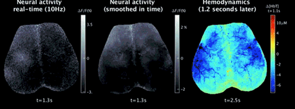

An Introduction
 Amaryllis hybrid, London Horticulture Society
Amaryllis hybrid, London Horticulture Society
Hello user! You've found the book of bioinformatics in Rust. If you're a total beginner to anything bioinformatics, Rust, or programming, then this is the book for you. I hope it captures your interest like biology captured mine!
If you want to reach me or have something you want added to the book, let me know here!
Definitions and Background
We'll start by going over a few things that aren't covered in other bioinformatics books but are necessary to understand building in Rust and systems programming in general. Page on!
Binary VS Library
When we get a program, we click it, it'll open, and we'll be able to do stuff. We'll have to choose the program based on our operating system.
The program we're downloading is a binary, also known as an executable: a bunch of operating system-specific operations amalgamated together so the computer can do the things we want it to in (hopefully) an efficient manner. You may have heard this word before on Windows as the .exe file type or just plain no file extension in Ubuntu or Linux. In Rust, we can make all of these file types really easily!
Binaries always have a main function, written fn main(){}. This main function is the Steve Jobs (or Woz) of all things in our binary (random thought, did you know Steve Jobs travelled through India studying Zen Buddhism? Crazy).
Everything that will actually be done is in the main function, with other functions, definitions, etc. being sourced from everywhere else. We build binaries by typing cargo build --bin.
The other kind of thing we make in Rust is a library. While we also build a library with cargo build --lib, a library does not have a program that we can just run like what we would imagine. This is because a library's purpose is to be a bunch of small, reusable pieces of code that we can use to make an executable, but aren't really useful to our users. As an analogy, a library is like a tool shed and the binary a house that the user lives in.
We will be building binaries in this book on the Rust playground, a website where everything is already set up for us; there isn't any setup for this book! Each of the exercises will have a link to the playground with the exercise we're working on, it's that easy!
Ready Go
Instead of going into a lot of detail, let's just start doing things!
fn main(){
// This is a comment within a function!
}
Comments don't do anything in code because of the two // marks before the text and can be put anywhere
We need comments to let people know what we're doing in between code, and we'll use them to talk to you throughout code tutorials
 Electron density projection of human serum albumin protein taken by NASA. Even complicated biological things are made of smaller, simpler things!
Electron density projection of human serum albumin protein taken by NASA. Even complicated biological things are made of smaller, simpler things!
Add, Subtract, Multiply, Divide
Let's try some arithmetic next:
fn main(){
// Make a variable a that holds 1
let a = 1;
// Make a variable b that holds 2
let b = 2;
// Add them together to get c
let c = a + b;
// Multiple by 3!
let d = c * 3;
// Divide by 3!
let e = d / 3;
// The variable e holds 3, but you'll have to take our word for it for now, we're going to print in the next few sections!
}
Semicolons
What's the point of the semicolons? Aren't we just typing a new thing we want to do on a new line anyway? In Python and R, we continue what we're doing by going to a new line.
In Rust, semicolons separate the steps of a function. This means we could just type everything on one line separated by semicolons, even though this would look kind of weird. Going to a new line isn't necessary, but makes it look nicer like in Python and R.
In Rust, the whole binary is run like a single function, thus the main function structure. This means that if we don't have a semicolon, we'll return whatever we get from the non-semicolon line, the main function will end, and so will our program. If we want to return something from a function, we don't need to type return, we just leave out a semicolon!
Print Numbers
Let's print something!
fn main(){
println!("42")
}
Well that was pretty easy, we didn't even need the semicolon because we end the main function after printing. Now instead of printing directly, let's try printing something in a variable.
fn main(){
// Make a variable x that holds 1
let x = 1;
println!("{}", x)
}
Now that we have a variable, println! takes two parts, the first is formatting the print, while the second part is the variable to print. the quotes surround everything that will be printed, in our case, {} which is always the input variable. So we have stated to print only the variable. We probably want to other things than just deal with numbers though, so let's try to
Comparing Printing Strings
I'll just come out and say it: in other interpreted languages, it's really simple to do things. Let's go with the classic, printing "Hello World!".
Python:
thing = "Hello World!"
print(thing)
R:
thing = "Hello World!"
print(thing)
And comparatively in Rust:
fn main(){
let thing="Hello World!";
println!("{}", thing);
}
Why is it so much longer in Rust? With great power comes having to be specific! Let's break it down based on what we learned so far.
We're building a binary, which is why we have the main function, fn main(){}.
Inside the main function, we create a variable thing that stores "Hello World!" We put the thing variable into println!, where "{}" is just our variable, and the second input is the actual variable to be printed. We could also print something more fun like:
Our variable contains: Hello World!
by typing:
println!("Our variable contains: {}", thing);
Level Cleared!
Congratulations, you cleared level 2! It was a bunch of sections, but we learned some programming building blocks that we'll continue to use for the rest of our career. Time to take a break!

Functional MRI of a resting mouse brain, Zuckerman Institute Ma, Hillman et al.
Vectors
We made a string in the prior section, so let's make it's simpler cousin, the vector!
fn main(){
let thing_of_things = vec![1,2,3,4];
}
Ok slow down, what is a vector even? A vector in Rust is a sequence of things, in our case the numbers 1,2,3,4 one after the other. We could also make the vector with the following:
fn main(){
let thing1 = 1;
let thing2 = 2;
let thing3 = 3;
let thing4 = 4;
let thing_of_things = vec![thing1,thing2,thing3,thing4];
}
Printing Vectors and Debug Mode
If you look closely, we didn't print the vector just yet, for that we need something called debug!
Debug is something new if you're coming from other languages like R or Python, and it's something that we don't really need to know so we'll just leave it at: We neeeeeeed it! At least for vectors.
fn main(){
let thing_of_things = vec![1,2,3,4];
println!("{:?}",thing_of_things)
}
Can you spot the debug notation? It's the :? inside the {}! Rust is super smart, if we didn't have the debug and just wrote println!("{}",thing_of_things) like in our prior examples, we'd get an error like this:
the trait std::fmt::Display is not implemented
But we'd also get this:
in format strings you may be able to use {:?} (or {:#?} for pretty-print) instead
The first option is exactly what we needed, which leads us to the golden rule: figure out the output Rust gives us. Rust is pretty smart, it'll probably give us some useful clues (and in this case the exact fix) to what to do if we get an error!
Dot Notation
In Rust and a few other programming languages, we can use dot notation. Dot notation is used when we have a thing and we want to do something with it. In pseudo programming English if I wanted to say:
"cut apple"
With dot notation it would look something like:
apple.cut();
where we have an apple and we want to cut it. Let's use dot notation with a vector!
fn main(){
// Make a vector holding the numbers 1,2,3,4
let vector = vec![1,2,3,4];
// Use dot notation with len(), a function to get the length of a vector
let length_of_vector = vector.len();
// Print the value stored in length_of_vector, which is the length of the vector
println!("{}",length_of_vector)
}
Congrats! We've not only used our first dot notation, our first function! It doesn't seem like it now, but len() is extremely powerful and a workhorse for Rust programmers of all levels.